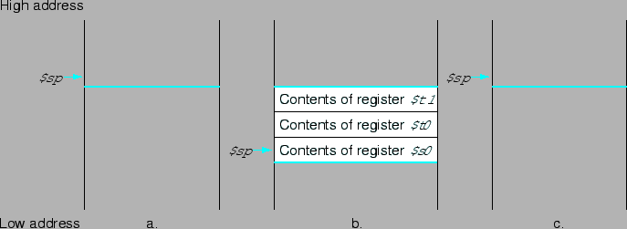

พิจารณาฟังก์ชั่นภาษา C ดังต่อไปนี้
int leaf_example(int g, int h, int i, int j)
{
int f;
f = (g + h) - (i + j);
return f;
}
จงแปลงเป็นภาษาแอสแซมบลีของ MIPS
ตัวแปรพารามิเตอร์ g, h, i, และ j จะอยู่ในอาร์กูเมนต์รีจีสเตอร์ $a0, $a1, $a2, และ $a3 ส่วน f อยู่ในรีจีสเตอร์ $s0 การแปลงฟังก์ชั่นนี้เป็นภาษา MIPS เริ่มจากการทำเครื่องหมาย
leaf_example:
ในขั้นตอนต่อมาเป็นการเก็บค่าในรีจีสเตอร์ที่จะถูกใช้ในฟังก์ชั่น เพื่อที่จะไม่ให้กระทบกับการทำงานของ caller เมื่อทำงานในฟังก์ชั่นเสร็จสิ้น เราต้องการใช้งานรีจีสเตอร์ชั่วคราวสองตัว ดังนั้นจะต้องเก็บค่าในรีจีสเตอร์สามตัวได้แก่ $s0, $t0, และ $t1 เพื่อดำเนินการดังกล่าว เราทำการ push ค่าลงในสแตก เริ่มจากการสร้างพื้นที่สำหรับเก็บค่า 3 word และเก็บค่าลงไป จากคำสั่งต่อไปนี้
addi $sp, $sp, -12 # adjust stack to make room for 3 items sw $t1, 8($sp) # save register $t1 for use afterwards sw $t0, 4($sp) # save register $t0 for use afterwards sw $s0, 0($sp) # save register $s0 for use afterwards
รูป 2.6 แสดงค่าในสแตก ก่อน ระหว่าง และหลังการเรียกฟังก์ชั่น คำสั่งต่อไปสามคำสั่งเป็นคำสั่งที่เป็นการทำงานของฟังก์ชั่น
|

|
add $t0, $a0, $a1 # register $t0 contains g + h add $t1, $a2, $a3 # register $t1 contains i + j sub $s0, $t0, $t1 # f = $t0 - $t1, which is (g + h) - (i + j)
ต่อมาเป็นการเก็บค่า f ไว้ใน $ra เพื่อคืนค่าให้ caller
add $v0, $s0, $zero # return f ($v0 = $s0 +0)
ก่อนการคืนการควบคุมไปยัง caller ต้องทำการเรียกคืนค่าในสแตกกลับมาก่อนเพื่อเป็นการจัดค่าในรีจีสเตอร์ให้เป็นค่าเดิม ก่อนการเรียกฟังก์ชั่นของ caller
lw $s0, 0($sp) # restore register $s0 for caller lw $t0, 4($sp) # restore register $t0 for caller lw $t1, 8($sp) # restore register $t1 for caller addi $sp, $sp, 12 # adjust stack to delete 3 items
จากนั้นเป็นการเสร็จสิ้นการเรียกฟังก์ชั่น โดยการเรียก jump ไปยัง jump register
jr $ra # jump back to calling routine
จากตัวอย่างขั้นต้นจึงมีความจำเป็นต้องกำหนดการรักษาค่าก่อนและหลังการเรียกฟังก์ชั่นอย่างเป็นระบบ เพื่อป้องกันการเก็บค่ารีจีสเตอร์ที่ไม่ได้มีการใช้งานเมื่อเรียกฟังก์ชั่น โดยที่ ซอฟต์แวร์ของ MIPS แบ่งรีจีสเตอร์ 18 ตัวออกเป็นสองกลุ่มได้แก่